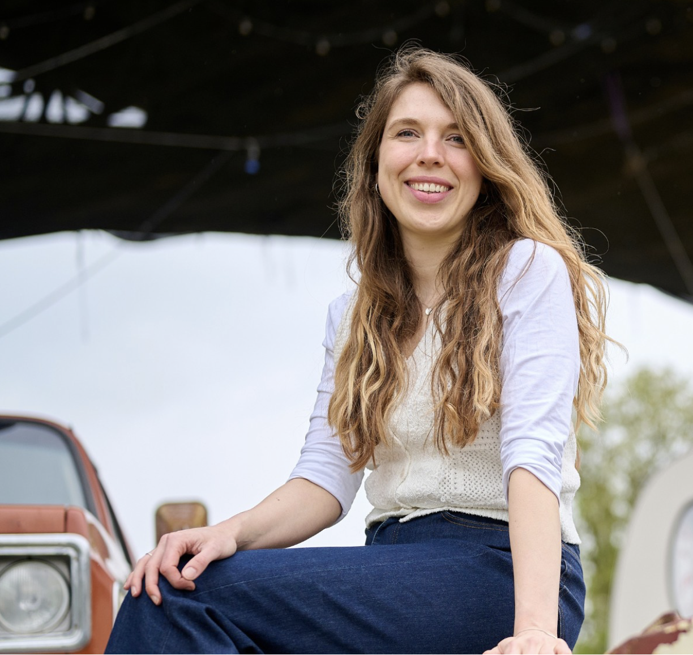
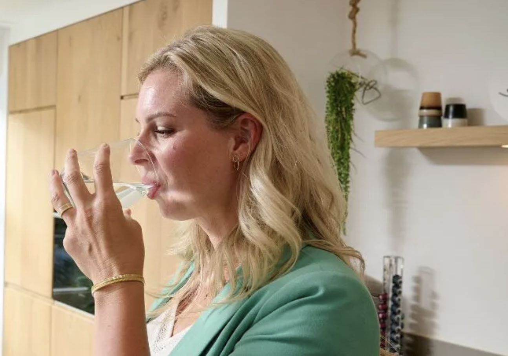
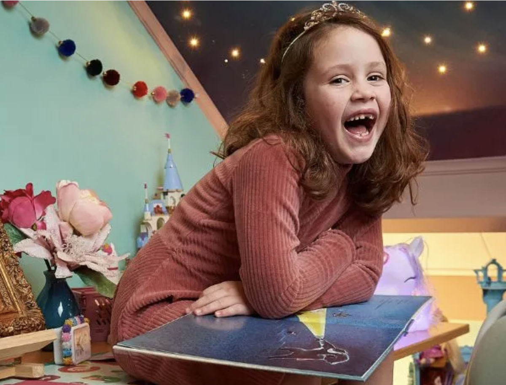
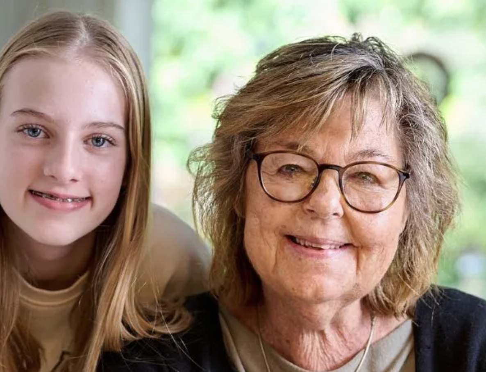
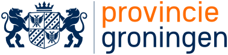

Digitaal begint
bij mensen.
Wij maken complexe vragen eenvoudig.
Met onderzoek, doordacht design en techniek
die je ambities waarmaakt.
Mooi is een begin.
Maar werkt het ook
voor je gebruiker?
Een digitaal product moet meer doen dan er goed uitzien. Het moet logisch voelen. Drempels wegnemen. En mensen helpen om verder te komen.
Daarom beginnen we bij de mensen die het gebruiken. We verbinden hun behoeften met jouw ambities en vertalen die naar intuïtieve websites, platforms en applicaties. Van het eerste inzicht tot de technische realisatie.
Zo kijken wij naar jouw vraag →


Werk dat
voor zich spreekt.
Eerst begrijpen.
Dan pas maken.
Research, design en development versterken elkaar. Daarom houden we ze dicht bij elkaar. En jou dicht bij het proces.
Samen de juiste stap zetten →01Begrijpen
+
Wat hebben je gebruikers écht nodig? Met gesprekken, gebruikersonderzoek en het toetsen van aannames brengen we de vraag achter de vraag in beeld.
Research · UX-audit · Strategie02Verbeelden
+
We maken ideeën tastbaar. Van heldere gebruikersflows tot interactieve prototypes en herkenbare interfaces. We testen vroeg, zodat we weten wat werkt.
Concepting · UX & UI design · Prototyping03Waarmaken
+
Onze developers brengen het ontwerp tot leven. Toegankelijk, snel en schaalbaar. Met aandacht voor de details, integraties en systemen achter de schermen.
Development · Integratie · Implementatie04Verder brengen
+
Live gaan is een nieuw begin. We blijven meten, leren en verbeteren. En zorgen met onderhoud en ondersteuning dat je product met je organisatie meegroeit.
Doorontwikkeling · Onderhoud · OptimalisatieAI geeft ons snelheid.
Vakmanschap geeft richting.
Meer ideeën verkennen. Sneller prototypes maken. Slimmer ontwikkelen. We omarmen wat AI mogelijk maakt, van het eerste concept tot de realisatie.
Maar een overtuigend resultaat vraagt om meer dan een goede prompt. Wij bepalen de richting, toetsen aan echte gebruikers en bewaken de kwaliteit van ontwerp en code. De tools veranderen. Onze verantwoordelijkheid blijft.
Korte lijnen.
Brede blik.
Een betrokken team van designers en developers. Meer dan 15 jaar ervaring, een frisse kijk en het liefst rechtstreeks contact. Je werkt met de mensen die het maken.
Leer ons kennen →Een goed resultaat begint
met een goede klik.
“Jeroen & Jeroen luisteren goed naar de wensen van de klant en verrassen je vervolgens door hun eigen specialisme en creativiteit toe te voegen.”
Rianne SchoutenDiabetesvereniging Nederland
Klein beginnen. Veel ontdekken.
Hoe voelt jouw
website voor een ander?
Ontdek waar gebruikers vastlopen. Met onze gratis UX-scan krijg je een persoonlijke analyse van structuur, flow en gebruiksgemak. Inclusief concrete tips van onze designers.
Vraag je gratis UX-scan aan →Gratis en vrijblijvend · Binnen 48 uur
Nog iets dat je wilt weten?
Kunnen jullie ook ons bestaande platform verbeteren?+
Ja. We brengen de huidige gebruikerservaring in kaart en bepalen samen welke verbeteringen het meeste verschil maken. Dat kan een gerichte optimalisatie zijn of een compleet nieuw ontwerp.
Verzorgen jullie ook de technische ontwikkeling?+
Ja. We combineren UX en UI design met front-end en back-end development, integraties, onderhoud en doorontwikkeling. Ook kunnen we als designpartner samenwerken met jouw ontwikkelteam.
Hoe zetten jullie AI in?+
We gebruiken AI om concepten te verkennen, prototypes te versnellen en ontwikkeling te ondersteunen. Onze designers en developers beoordelen de uitkomsten. Onderzoek met echte gebruikers blijft de basis voor belangrijke ontwerpkeuzes.
Samen maken we meer mogelijk
Een greep uit onze
opdrachtgevers.

